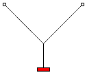

Return to home page.
My physics books of about fifty years ago call this a "double pendulum," but that term now seems to refer to a pendulum on the end of a pendulum, so I'll just call it a "multi-motion swing."
This swing is similar to the common tire-on-the-end-of-a-rope, but uses a Y-shaped rope arrangement, like this:

Because of the Y-shaped support ropes, the swing takes less time to go left-to-right-to-left than to go back-to-front-to-back. If you divide the longer time period by the shorter time period, this ratio has a very big effect on what motions you can get. The period for each direction depends only on the square root of the length of the pendulum for that direction (and on the acceleration of gravity, but that's pretty constant on the surface of the earth).
The motion shown in the animated GIF is based on an overall length of 56 inches from the top supports to the weight and 28.57 inches for the vertical string. The ratio of the higher to the lower frequency is the square root of 56 over 28.57, or 7/5, or 1.4. As we look down on the swing, it makes 7 cycles going left to right to left while it is making 5 cycles going top to bottom to top. Different Web browsers handle animated GIFs differently, so the speed of the motion may not look right. The period (time to complete one cycle) in the vertical direction should be 2.4 seconds and 1.714 seconds horizontally.
The motion you actually get also depends on the starting position of the swing. You get the dullest motions by starting from left, right, back, or front. You get the more interesting motions by starting at some off angle, like two steps back and two steps to the right. If the ratio of the periods is equal to the ratio of two relatively small whole numbers, the motion will repeat itself in just a few cycles. Otherwise, it may never repeat itself. For one thing, a child is definitely not a compact rigid body, so you can only get an approximate location for the center of gravity and it will keep shifting while the child is swinging.
That leads up to a vital question: How can you pump up
an unusual swing like this? As near as I can tell,
the answer was given to me by a fellow engineer when he told me that he pumped up a slowly-moving swing just by
standing on the seat with his knees bent, then standing up at the bottom of the arc. Each time he got to the high
point, he'd crouch down again. Remembering that I always sat on the swing and leaned way back at the low point and
sat up straight at the high point, I wasn't at all sure that the bending-knees method would work. In addition to
trying it, I analyzed it and concluded that he was right. In fact, I couldn't think of any other way than to force
my center of gravity up when the swing had the most centrifugal force (the most tension in the support ropes) and
let it drop when the swing had the least tension in the ropes. (Thanks, Ed.)
The same idea should apply to this unusual backyard swing. In the animation of a multi-motion swing we designed it so the swing would have one or more places where the swing temporarily stopped, so a swinger could crouch down, and one or more other places where the swing was moving the fastest (hanging straight down), so a swinger could stand up straight.
I intended to set up this kind of a swing in our basement so I, or my kids, or my grandkids could try it out. I pretty much gave up on that idea for several reasons. First and foremost, the Y-shaped arrangement shown above is unsafe. Depending on the included angle between the upper two supports, the tension in them can be much greater than the weight of the swinger. At the very least, the vertical chain should reach all the way up, to be in line with the tops of the other two. This wouldn't affect the motions of the swing. I say "chain", because a steel chain would be a lot safer than a rope. Steel is a good, dependable structural material. Rope materials really aren't.
Secondly, we are used to swings which have about six-foot-long chains, giving periods of about 2.7 seconds, so I'd like the vertical chain to be about that long. The overall distance from the top supports to the seat, or platform if we intend to stand, would be about twice as long, about 12 feet. I don't have that much height in my basement. I also don't have three large trees in our back yard to use. For someone with trees appropriately situated or the time and energy to build a large support frame, this might be a nice do-it-yourself project. I don't know of any commercial versions of this swing, but there may be some out there.
As a do-it-yourself project, I tried to modify a broken radio-controlled car so I could use it as the swinging
weight and remotely raise and lower it to pump up the swing. I imagined a bit of a family competition to see who
could pump it up the most and the fastest. If the design or the construction weren't quite structurally adequate, we
just lose a toy, not a family member. This idea didn't work very well, as the weight couldn't move up or down fast
enough. A linear solenoid might work, but I don't have one. I did try a couple of other ways of moving the weight up
and down and convinced myself that you really can pump up
this kind of swing. I also built a version as a
swing for a small doll. In this case, the child just pushes on the doll.
Return to home page.